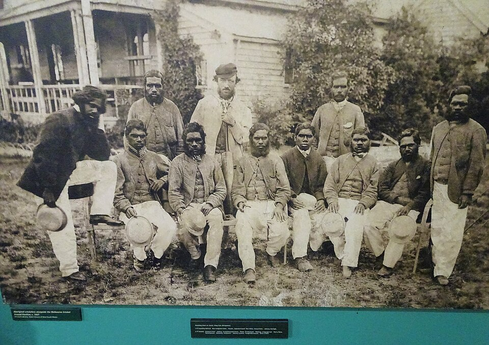

वेलिंगटन टेस्ट: मैच बचाने के लिए न्यूजीलैंड को पांचवें दिन खेलने होंगे 90 ओवर
वेलिंगटन टेस्ट में जीत के लिए उतरी भारतीय टीम के सामने पांचवें दिन न्यूजीलैंड के बल्लेबाजों को रोकने की चुनौती है। कीवी टीम अभी भी 233 रन पीछे है और उसे मैच बचाने के लिए 90 ओवर खेलने हैं।

वेलिंगटन टेस्ट मैच के आखिरी दिन भारतीय टीम जीत की तलाश में है, लेकिन न्यूजीलैंड का पांचवें दिन मैच बचाने का इतिहास मजबूत रहा है। कीवी टीम अभी भी 233 रनों से पिछड़ रही है और उस पर पारी की हार का खतरा मंडरा रहा है। मुकाबले के अंतिम दिन न्यूजीलैंड को 90 ओवरों तक बल्लेबाजी करनी होगी।
आंकड़ों के अनुसार, न्यूजीलैंड ने अतीत में बेसिन रिजर्व मैदान पर मुश्किल परिस्थितियों में लंबे समय तक टिककर मैच बचाए हैं। साल 1991 में श्रीलंका और 2014 में भारत के खिलाफ कीवी बल्लेबाजों ने मैराथन पारियां खेलकर मुकाबला ड्रॉ कराया था। वर्तमान मैच में डेवोन कॉनवे (59 रन) और रचिन रवींद्र (27 रन) क्रीज पर टिककर अपनी टीम की उम्मीदों को जिंदा रखे हुए हैं।
और पढ़ें
 खेल
खेलवैभव सूर्यवंशी ने एशिया कप में जड़ा ऐतिहासिक दोहरा शतक, महज 53 गेंदों में बनाए 204 रन
राइजिंग स्टार्स एशिया कप में भारत ए के बल्लेबाज वैभव सूर्यवंशी ने यूएई के खिलाफ मात्र 53 गेंदों में 204 रनों की ऐतिहासिक पारी खेली। उन्होंने लिस्ट ए क्रिकेट में सबसे तेज शतक, डेढ़ सौ और दोहरे शतक का रिकॉर्ड अपने नाम किया।
 खेल
खेलवैभव सूर्यवंशी ने जड़ा लिस्ट-ए का सबसे तेज दोहरा शतक, भारत ने यूएई को हराया
वैभव सूर्यवंशी ने यूएई के खिलाफ 52 गेंदों में दोहरा शतक जड़कर लिस्ट-ए क्रिकेट इतिहास का सबसे तेज दोहरा शतक बनाया। भारत-ए ने 250 रन के लक्ष्य को महज 14.2 ओवर में हासिल कर लिया।
खेलएशिया कप राइजिंग स्टार्स: भारत ए और यूएई के बीच मुकाबला, आर्यंश शर्मा आउट
एशिया कप राइजिंग स्टार्स के मुकाबले में भारत ए का सामना यूएई से हो रहा है। मैच में यूएई की टीम को पहला झटका लग गया है और आर्यंश शर्मा आउट हो गए हैं।

खेल2018 के सैंडपेपरगेट के बाद ऑस्ट्रेलियाई टीम में मिंट के इस्तेमाल का दावा
ऑस्ट्रेलियाई मीडिया रिपोर्ट में दावा किया गया है कि 2018 के सैंडपेपरगेट कांड के कुछ महीने बाद दुबई टेस्ट के दौरान खिलाड़ियों ने गेंद की स्थिति बदलने के लिए मिंट के इस्तेमाल पर चर्चा की थी।